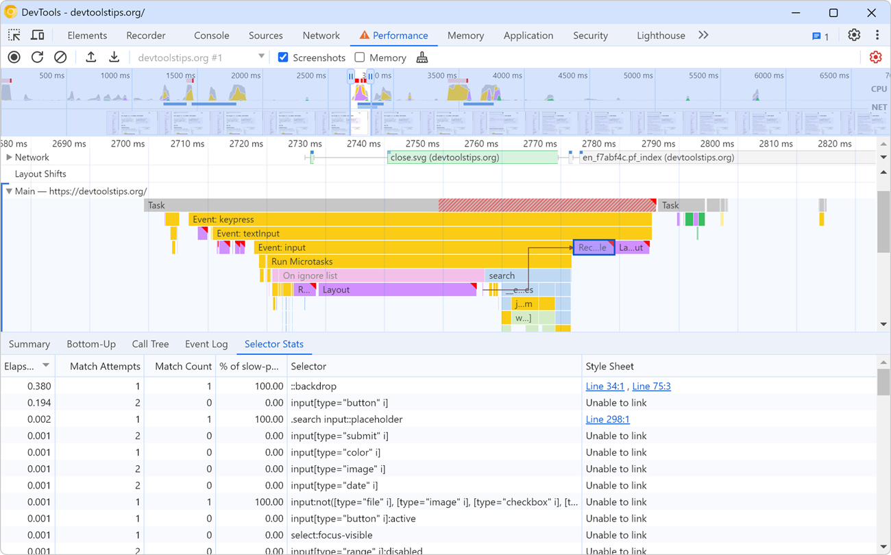

Help us make DevTools Tips better! Fill out this survey to tell us more about your DevTools habits and frustrations.
-
Find memory leaks by comparing heap snapshots
 Note: If you think your memory leak comes from DOM nodes, you can also use the Detached Elements to... Read more
Note: If you think your memory leak comes from DOM nodes, you can also use the Detached Elements to... Read more -
Display the current framerate of your webpage
 For a super smooth user experience on your website or app, it's better if the browser manages to ren... Read more
For a super smooth user experience on your website or app, it's better if the browser manages to ren... Read more -
Detect unused CSS and JavaScript code
 To make sure your webpage loads and appears fast for your users, load only the CSS and JS code that... Read more
To make sure your webpage loads and appears fast for your users, load only the CSS and JS code that... Read more -
Throttle your CPU
 Your development machine is very likely much more powerful than the devices your users have (which a... Read more
Your development machine is very likely much more powerful than the devices your users have (which a... Read more -
See the size of the transferred data for images, scripts, or other resources
 To know how much data your website transfers between the server and the client to display images, or... Read more
To know how much data your website transfers between the server and the client to display images, or... Read more -
Show web vitals
 Web vitals are a set of metrics that help you determine how well-built your page is. You can learn m... Read moreCategories: Supported by:
Web vitals are a set of metrics that help you determine how well-built your page is. You can learn m... Read moreCategories: Supported by: -
Find the most expensive CSS selectors

When it comes to performance, we often spend time improving our JavaScript code. But CSS has a role... Read moreCategories: Supported by:
-
Automatically get issues your site has with performance, accessibility, security, compatibility, and others.
 Edge has a very useful Issues panel that can automatically list a lot of different issues with your... Read moreCategories: Supported by:
Edge has a very useful Issues panel that can automatically list a lot of different issues with your... Read moreCategories: Supported by: -
Check if your site can be instantly reloaded from bfcache
 Most browsers are now able to instantly go back to previously visited pages without having to wait f... Read more
Most browsers are now able to instantly go back to previously visited pages without having to wait f... Read more -
Record and replay user flows
 Have you ever had to test the same user scenario again and again while working on a fix or performan... Read moreCategories: Supported by:
Have you ever had to test the same user scenario again and again while working on a fix or performan... Read moreCategories: Supported by: -
Query object instances and holders from the console
 All browser DevTools have a few built-in functions in the console to do things like get the current... Read moreCategories: Supported by:
All browser DevTools have a few built-in functions in the console to do things like get the current... Read moreCategories: Supported by: -
Get detached DOM elements to investigate memory leaks
 Memory leaks can quickly become a big problem for long-running applications, and a common source of... Read moreCategories: Supported by:
Memory leaks can quickly become a big problem for long-running applications, and a common source of... Read moreCategories: Supported by: -
Throttle the network speed to test your website on slower connections
 While you may develop your website on a fast network connection at home or at work, your users may n... Read more
While you may develop your website on a fast network connection at home or at work, your users may n... Read more -
View performance markers in order
 When logging performance.timing events to the console, they appear in alphabetical order since they... Read more
When logging performance.timing events to the console, they appear in alphabetical order since they... Read more